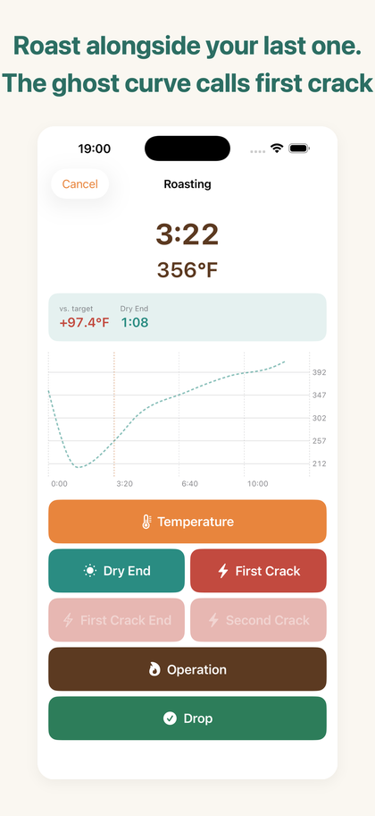
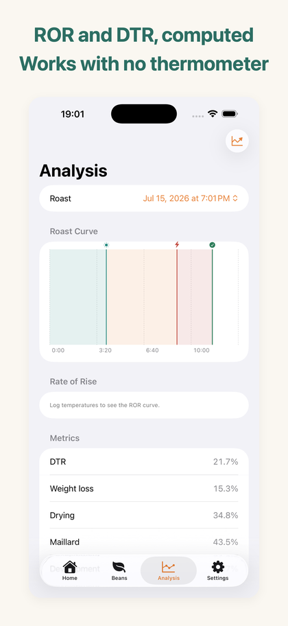
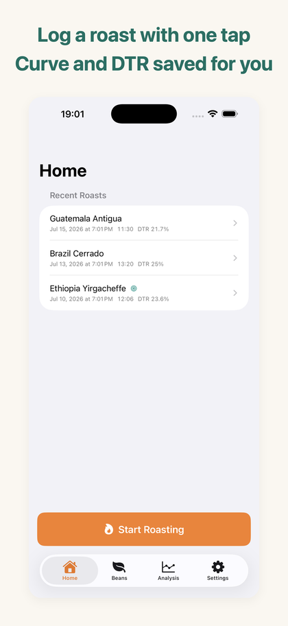

HazeLog is a roast-curve logbook for people who roast coffee on a stovetop pan, hand-net or small home roaster.
Save the roast you got right, then run alongside that curve next time to recreate it.



iPhone / iOS 17.0 or later · English & Japanese · fully offline
Charge, temperature, first crack, second crack and drop — each on a 64pt button, designed for one gloved hand and a glance. A mistap can be undone for five seconds.
What you tap turns into a time-versus-temperature roast curve, with drying / Maillard / development phase bands and event markers.
Temperature is optional. Even with only first crack and drop, your event timeline and DTR still hold up as a record.
Mark a past roast as a target profile and its curve is overlaid faintly on the live screen. While you roast, you can see how many degrees you are above target and how long until the next crack.
The ghost curve, ROR/DTR analysis, batch comparison and CSV/PDF export unlock with the one-time HazeLog Pro purchase.
| Feature | Free | HazeLog Pro |
|---|---|---|
| Live logging, curve and saving | Unlimited | ✓ |
| Heat and damper operation log | ✓ | ✓ |
| Green bean master | Up to 3 beans | Unlimited |
| Ghost curve (replay mode) | — | ✓ |
| ROR / DTR analysis | — | ✓ |
| Batch comparison view | — | ✓ |
| CSV / PDF export | — | ✓ |
HazeLog Pro is a one-time purchase, not a subscription, and can be restored at any time.
Yes. Temperature is optional. Logging just first crack and drop still gives you a complete event timeline and DTR.
No. HazeLog is built around manual logging. BLE probe integration is out of scope; it targets stovetop pans, hand-nets and small home roasters.
Yes. Switch between °C and °F in Settings. Readings are stored in one normalized unit internally, so past roasts stay comparable when you switch.
Everything stays on your device. No uploads, no tracking, no ads, and no account. The app works in airplane mode.
No. HazeLog Pro is a one-time purchase. Buy it once and keep it.
Pro includes CSV and PDF export. iCloud sync is under consideration for a future version.